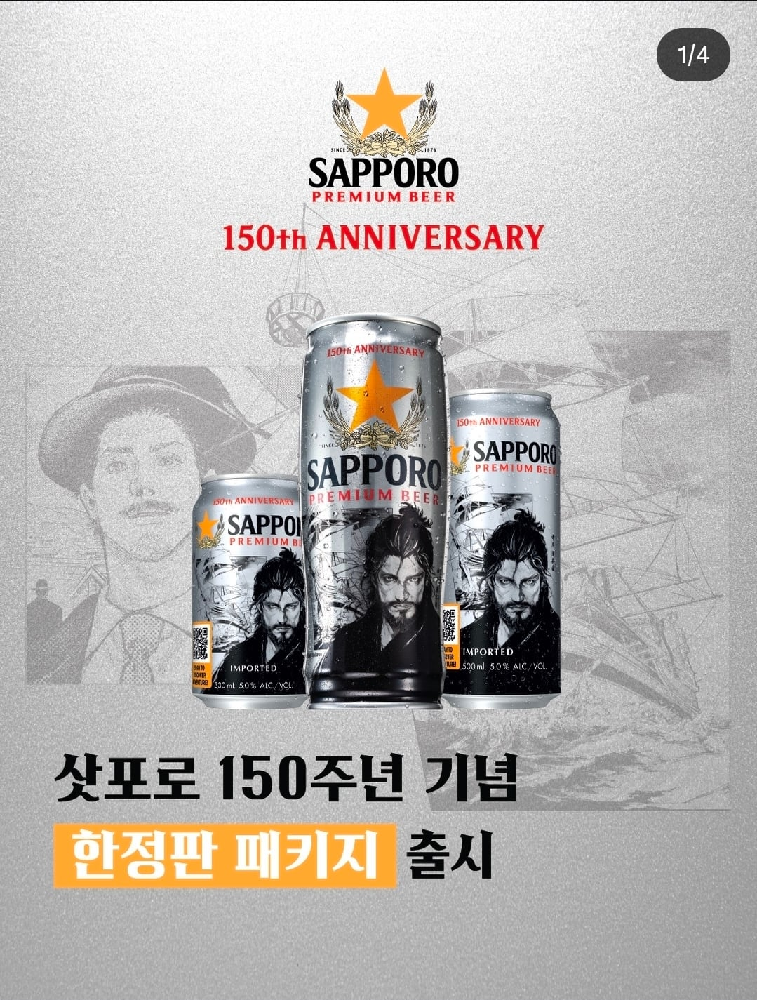
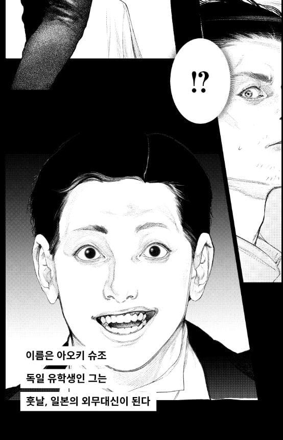
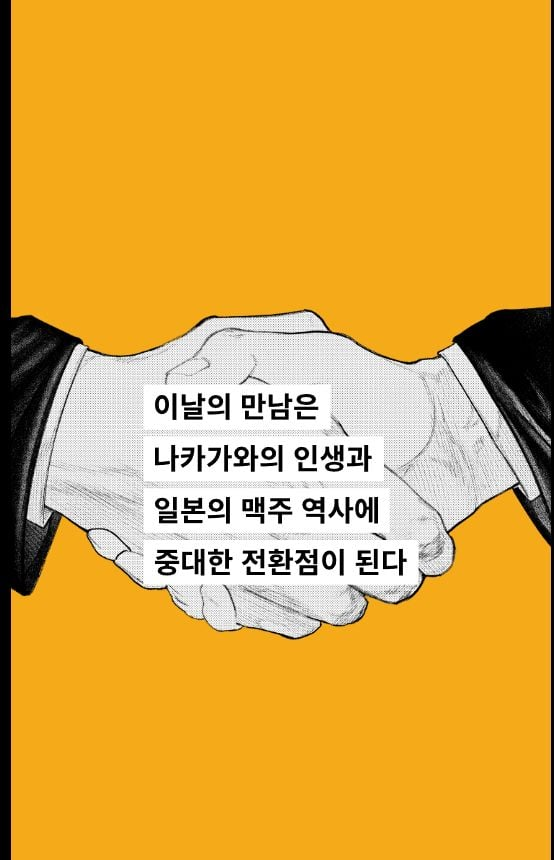
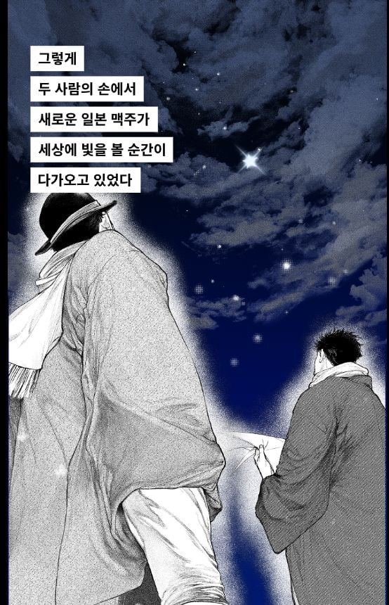
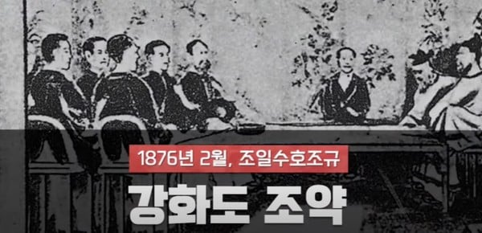

오늘 삿포로 맥주 인스타 올라온 소식.
150주년 기념으로 삿포로를 만든 나카가와 세이베이의 일러스트가 그려진 캔이 출시된다 선전함.
그리고 링크로 삿포로 맥주 스토리를 올렸는데
https://www.sapporobreweries.com/brands/spb/150th/kr/


요 아오키 슈죠라는 인간이 나옴.
어라? 저시대때의 일본 외무대신???
<강경한 외교를 추구하여, 러시아와의 대결을 통하여 조선으로 진출할 것을 주장하였으며, 러일전쟁 이후에도 대륙진출을 추진하였다.>
예상대로 정한론 주장하던 냥반임.
거기다 후반에

1896년 삿포로 맥주가 시작되는데
하필 이떄가

강화도 조약의 해라.
예상대로 인스타 댓글이 곱창남.
좆됨을 감지한 삿포로 꼬레아는 150주년 관련 홍보 게시물을 모~두 삭제하고 조용히 지나가길 바라고 있음.
뭐 일본맥주가 150주년 한대는데 뭐 어쩔건데 ㅋㅋㅋ 사먹지마 그냥